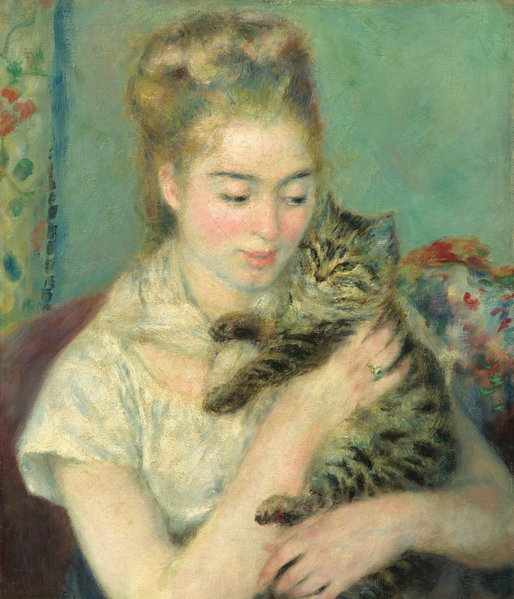

History
Cats have shared a long and fascinating journey with humans, dating back thousands of years. Domestication is believed to have begun around 9,000 years ago in the Fertile Crescent, where wild cats were drawn to human settlements for the abundance of rodents. In ancient Egypt, cats were revered as sacred animals, often associated with the goddess Bastet and even mummified to honor their importance. Over time, cats spread across continents through trade routes and voyages, valued for their hunting skills and companionship. From royal palaces to humble homes, these graceful creatures have evolved from skilled hunters to beloved family members, leaving pawprints on human history and culture.
Furry Friends
